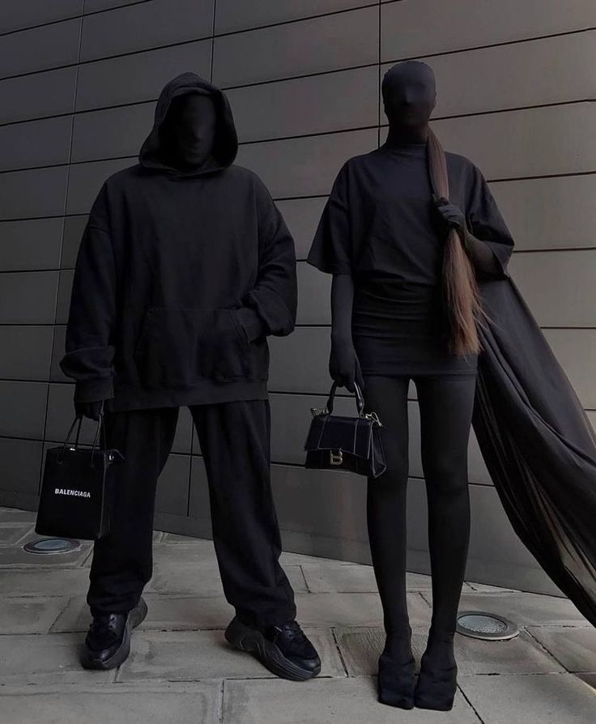

What is this 00pium
Opium is a record label founded in Atlanta, Georgia, own by rapper Playboi Carti(King Vamp). This label has many rappers such as:
- Destroy Lonely
- Ken Carson
- Homixide Gang (Homicide Beno! & Homixide Meechie)
Style of music
Musically, the Opium collective share a similar sound, with dark,
gritty, and avant-garde synths mixed into a rage beat reminiscent of
the '70s and '80s punk rock era. This experimental sound strays away
from the current trap hip hop genre and has garnered its own
cultlike fanbase
Each artist embodies the Opium sound in
the way they dress and present themselves, through both their street
style and music videos. Artists don the style by appealing to
all-black, heavy metal, punk, eccentric, non-conformist, horror, and
vampire-esque aesthetics combined with anime imagery and fonts.
*Official logo*
The Opium look
Dressing in the Opium style allows emulation of rockstars to portray an unapologetic sense of rebellion and individuality. In a world where conformity is often encouraged, our generation craves a sense of uniqueness and self-expression, and Playboi Carti’s movement gives us a medium to do so in a distinct way.
Influence On The Fashion
All the way from gothic fashion. Raider Klan already showed themselves in this style, but it was only from 2011 that the aesthetics became known to a wider public. Artists like A$AP Rocky and Playboi Carti contributed by frequently mentioning and wearing Rick Owens in their songs.
